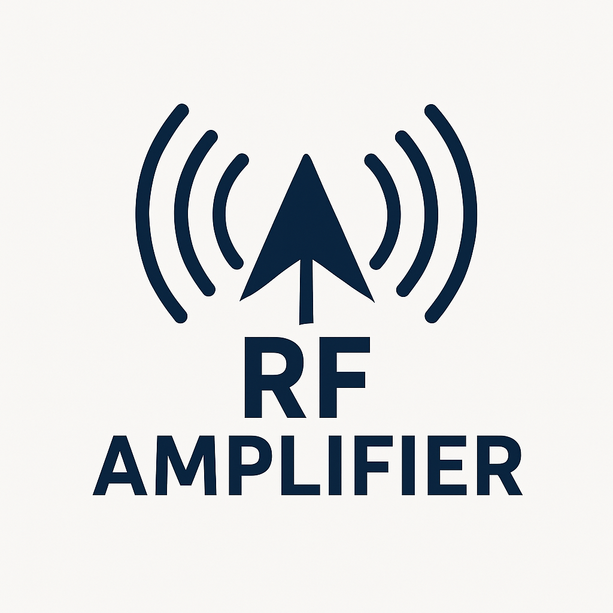
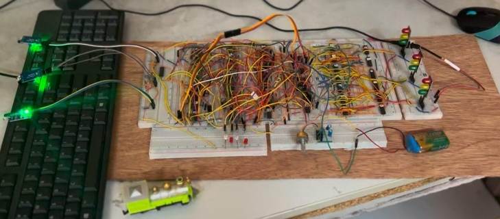
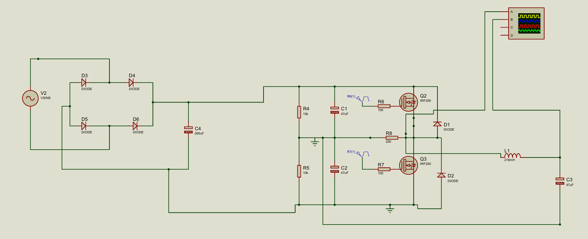
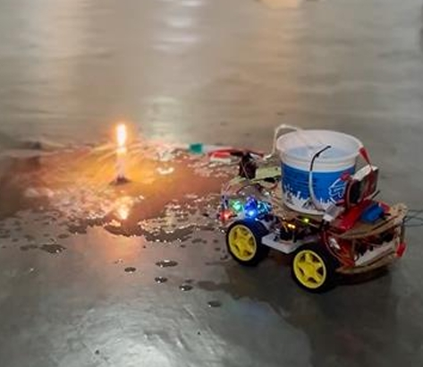
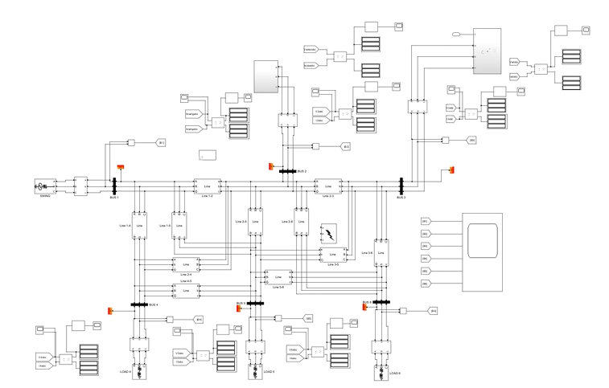
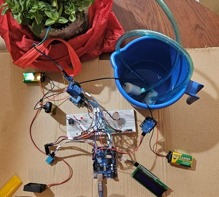
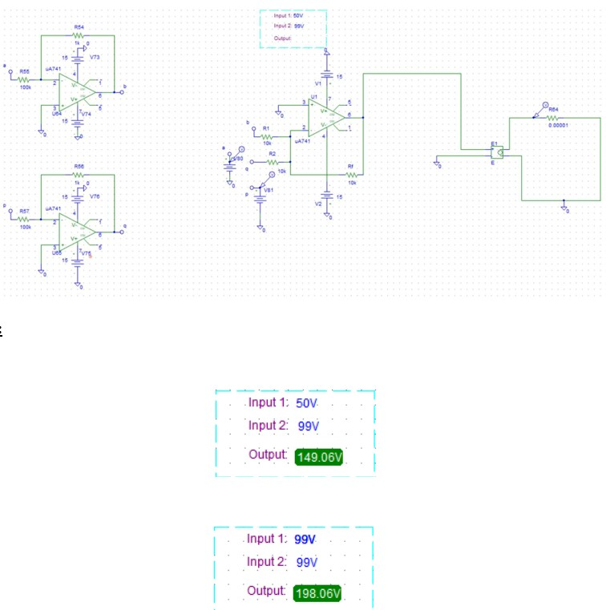
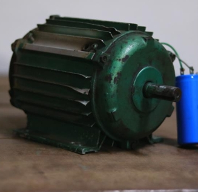
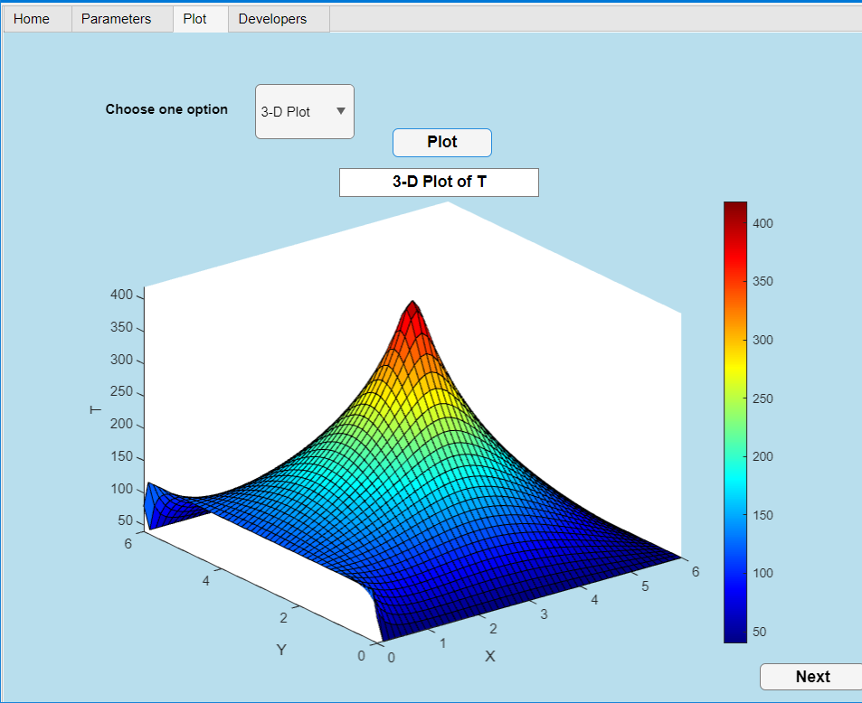

Smart Bangla Notice Board with Real-Time Calendar & Clock
Developed an IoT-enabled Bangla digital notice board using ESP8266, LED dot matrices, and web interface for real-time clock, calendar, and remote notice updates.

Class-A RF Power Amplifier for GSM 900 MHz
Designed and simulated a Class-A RF power amplifier in Cadence Virtuoso with common-emitter topology for GSM applications.
Year 3 · Term 2

Automated Railway Trafficking
Developed an FSM-based railway traffic light control system, tested via Proteus simulation and hardware implementation.

Frequency Converter with Real-time Display
Designed a 50 Hz to 60 Hz frequency converter with real-time frequency monitoring, utilizing a half-bridge inverter and SG3524 IC.

Autonomous Fire Extinguishing Robot
Built a robot with flame sensors, ESP32/ESP8266, and Arduino-based control for autonomous fire detection and extinguishing.
Year 3 · Term 1

Renewable Energy Grid Modeling
Developed a MATLAB/Simulink model analyzing overload fault scenarios (LLLG, line-to-line) in IEEE 6 BUS systems with solar and wind energy integration.

Smart Greenhouse Management
Designed an IoT-based system for real-time greenhouse monitoring and fire detection using Arduino UNO, ESP8266, and cloud data processing.
Biometric Authentication System
Implemented a voice-based classroom authentication system using MFCC and KNN in MATLAB, enhancing security and access control.
Year 2 · Term 2

Analog Circuit Design
Designed a 2-digit input analog calculator using op-amps, simulated in PSpice to balance speed and accuracy in analog computation.

Motor Rewinding & Maintenance
Rewound a single-phase induction motor to restore performance, following a systematic rewiring approach.
Year 2 · Term 1

Simulation & Numerical Analysis
Simulated 2D steady-state heat conduction with heat generation using MATLAB, applying numerical methods to analyze temperature distribution.